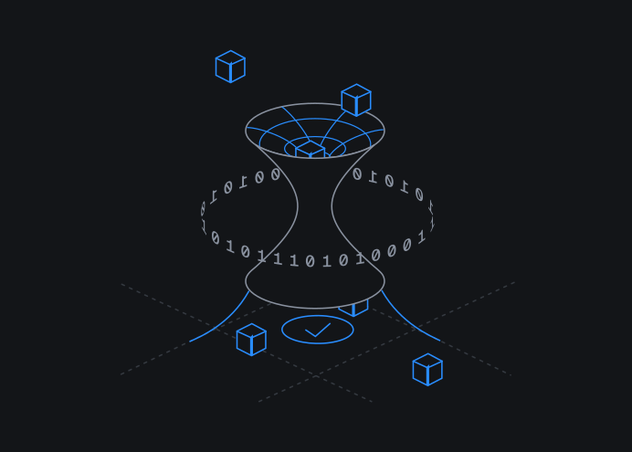
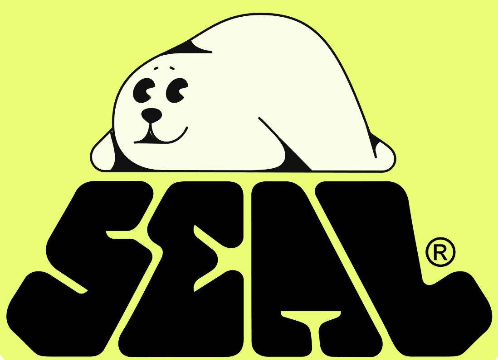
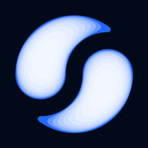

A composable structured-product vault where every number a vault tells you
is cryptographically proven on-chain — from the NAV, down to the silicon that signed it.
Most DeFi asks you to trust the number. Floe hands you the proof.
Built on the full Sui stack
SuiDeepBook

NautilusWalrus

Seal
Sui L1 · Move · DeepBook Predict / Margin / Spot · Nautilus TEE · Walrus · Seal01 / 06
The Problem
Every vault asks you to trust a number nobody can verify.
Complex strategies move off-chain — opaque trading, manual operator wallets, black-box yield with no
settlement proof. The "NAV" on the dashboard is a claim, not a fact. And claims break.
$8.8B+
Lost to DeFi exploits YTD 2025 — recoveries under $100M
$52M
Oracle / valuation manipulation in 2024 alone — across 37 incidents
Valuation-logic exploits keep landing
Recent vaults drained by faking the very number they reported.
Drift · fake-asset collateral, 2026$280M
Resupply · inflated vault valuation, 2025$9.5M
Venus · oracle manipulation, ZKsync 2025$0.7M
Trust evaporates fast
Friktion — Solana's largest options-vault platform — peak to shutdown:
Apr 2022Shutdown 2023
−97%TVL collapse. No on-chain proof of what was ever really there.
The root cause: a vault's true worth is a
computation across venues, oracles and positions — too complex to recheck in one call. So protocols
fall back to "just trust our keeper."
A valuation is a computation, not a claim. So we make the computation prove itself.
Floe runs vault valuation inside a Nautilus hardware enclave (AWS Nitro TEE),
anchored to a measured-code fingerprint (PCR0). The enclave signs each result;
a Move contract on Sui verifies that signature on-chain before any figure can move money.
01 · COMPUTE
Enclave values the vault
NAV, vol, collateral & risk computed inside an attested TEE — code identity proven by hardware.
02 · SIGN
Cryptographic attestation
The result is signed with a key sealed to the enclave — bound to its PCR0 measurement, never exported.
03 · VERIFY
Move checks it on-chain
floe_nav::verify validates the signature against the registered enclave — fully on-chain.
04 · REFUSE
No proof, no move
Unverified or stale figures are rejected; a circuit breaker halts on >5% NAV divergence.
Reported number vs. proven floor — the contract enforces the floor
Typical vault — self-reported "NAV"unverifiable
Floe — enclave-proven floorverified on-chain ✓
Click any figure in the app → land on the on-chain object, the verifier, the PCR0 measurement and the signature that backs it.
3-of-4
Proof intents live on-chain: NAV · Vol · Collateral (Risk reserved)
100%
Non-custodial & capability-gated — Floe can't move your funds itself
PCR0 b4d53224… — the on-chain anchor that ties every signature to one auditable build of the valuation code.
Nautilus = verifiable off-chain compute on Sui via AWS Nitro Enclaves; integrity proven on-chain (sui.io/nautilus).03 / 06
The Product
DeepBook PredictCetus

LendingdUSDC
One verifiable vault engine. Four ways in.
Built natively on DeepBook and extended across venues — every position marked,
every mark attested, every NAV backed by a hardware-proven floor.
Earn
Curated vaults deploy into DeepBook Predict liquidity, a lending sleeve & Cetus — each with a hardware-proven floor, not a marketing APY.
Proven NAV
Borrow
Lock vault shares and borrow against collateral whose value the contract verifies against an enclave signature. Trustless leverage on a trustless mark.
Attested collateral
Surface Studio
A live 3D implied-volatility surface reconstructed from DeepBook Predict's on-chain SVI oracles across ~18 expiries. Real skew, real term structure.
Live on-chain data
Deploy
Curators ship their own vault — venues, strata, risk policy & fees — with the same @floe/sdk we built on. Composability as a feature.
Open SDK
The moat — three Sui-native primitives doing real work
Nautilus
Hardware-attested compute. The trust anchor that turns a valuation into a verifiable proof.
Walrus
Durable, verifiable storage for the artifacts behind every attestation.
Seal
Access-gated data where confidentiality matters — privacy without sacrificing verifiability.
DeepBook crossed $3B spot volume in 2025 — the native liquidity layer of the Sui stack.04 / 06
Why Floe Wins
Other vaults make you trust the operator. Floe makes the contract verify the math.
Floe
Pendle
Ethena
Ribbon
Cega
Yearn
Hardware-attested valuation (TEE)
✓
✕
✕
✕
✕
✕
NAV verified on-chain by contract
✓
PARTIAL
✕
✕
✕
PARTIAL
Proven floor (not self-reported)
✓
✕
✕
✕
✕
✕
Non-custodial & capability-gated
✓
✓
PARTIAL
PARTIAL
✕
✓
Circuit breaker on NAV divergence
✓
✕
✕
✕
✕
✕
Multi-venue with verified marks
✓
✕
PARTIAL
✕
PARTIAL
✓
A real, growing market — built on the wrong foundation
Structured-yield TVL (Sep 2025)$13.3B
DeFi options-vault TVL~$1.0B
Pendle TVL peak (Sep 2025)$13.1B
53.7%
CAGR for DeFi → $231B by 2030
Verifiability is the unlock for the institutional capital this market is chasing — and the one thing today's vaults can't offer.
Honest read: Pendle & Yearn are commendably on-chain for their core mechanics —
but no incumbent cryptographically proves the valuation of complex, multi-venue strategies. That gap is Floe's wedge.
Enclave attesting, real deposits, a real end-to-end attested borrow executed on-chain,
and one-tap onboarding via Enoki zkLogin with sponsored gas — a first-time user with zero SUI can connect,
deposit, and click straight through to the cryptography behind their balance.
5
Vaults live & registered on-chain — all enclave-attested
3
Proof intents verified on-chain: NAV · Vol · Collateral
~18
Live SVI vol oracles powering the surface — to 25-day tenor
0 SUI
Needed to start — zkLogin + sponsored gas onboarding
What makes it defensible
✓A primitive, not a product: one attested-valuation engine feeds Earn, Borrow & Vol — and any vault a curator deploys.
✓Native to the full Sui stack: the only place Nautilus + Walrus + Seal + DeepBook compose into verifiable yield.
✓Trust-minimized by construction: non-custodial, capability-gated, circuit-broken — proof is the foundation, not a feature.
Floe
Most DeFi asks you to trust the number. Floe hands you the proof.
SuiDeepBookNautilus
Sui Overflow 2026 · DeepBook Track · Live on Sui testnet — floe.network06 / 06
 dUSDC
dUSDC